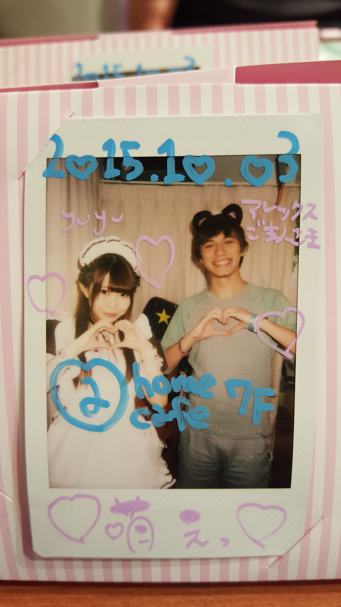

メイドカフェ＠ほぉ～むカフェ／@home cafe.
Mindy: I met up with Alex and Kevin in Shinjuku station where we waited for Kevin's friend from Boston, Alexa. From there the group migrated along the Chou Sobu line towards Akihabara, home of the Maid Cafes. We didn't have a particular cafe in mind for the day but it's not difficult at all finding one. The one we chose actually took up four floors in the building and a souvenir shop comprising the basement level. After heading up to the seventh floor, a staff member handed us the menue and the rules. One of the rules was no photos of the maids and another was no physical touching of the maids. After waiting a few minutes, we were seated and greated with the actual menues in English.
Evidently customers are deemed "Masters" and "Princesses" in the cafe. I ordered some much needed coffee in the form of a hot caramel latte and Alex ordered a hot mocha latte. Both of them would have the maid serving us draw on them. I had a giraffe drawn and Alex had a penguin drawn. We both ordered omu-rice (because I needed to fulfull my dream of a stereotypical maid cafe) which also had the maids draw pictures on the omlette. Alex had a bear drawn and I had a gundam drawn. Our maid was amazingly talented and did both with some awesome art skills. Didn't hurt either that it was super moe. Kevin and Alexa each ordered a "Master's Plate". Before eating and drinking we had to cast a magical spell on our drinks and food in order to put moe love into it. It was a very cute spell.


As part of our meal, we were allowed to choose either a game or a photo with a select maid. All of us opted for a photo with a maid. The process was a little bit weird as the table was presented with a cork board with photos of all the maids and their names and we were told to select which one we wanted to take a photo with. Alex chose the same one I did. When our maids were free, they called our names and we went up to the stage to take a photo with them. We got to choose a headpiece and a pose with which to take the photo. My maid was really cute.

To end off the day we walked around Akiba a bit before entering the building next to the Maid Cafe and looking through the mechandise on each floor. There was mostly anime things and figurines as well as a floor dedicated to cosplay.